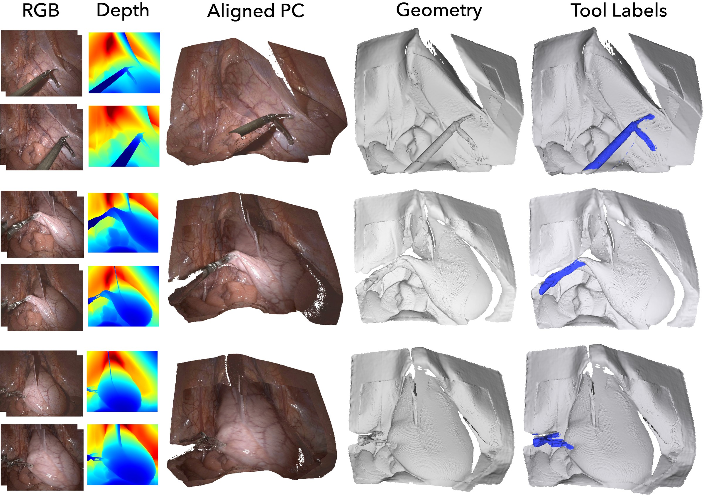
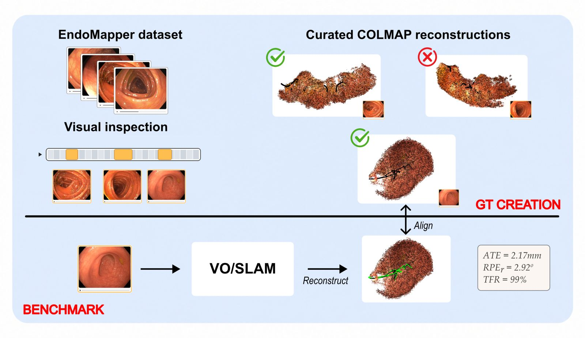
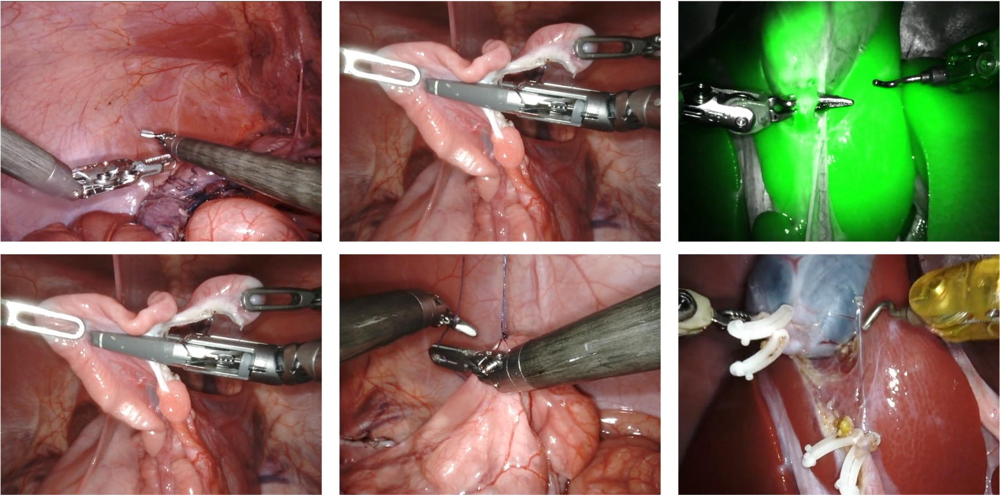
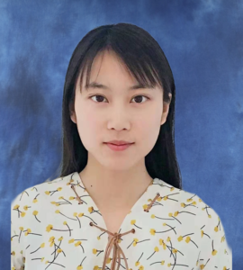
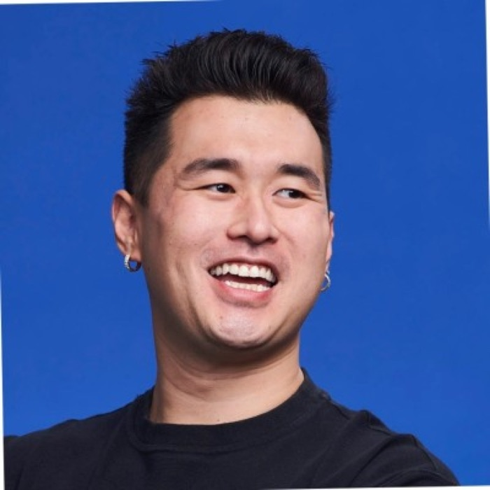
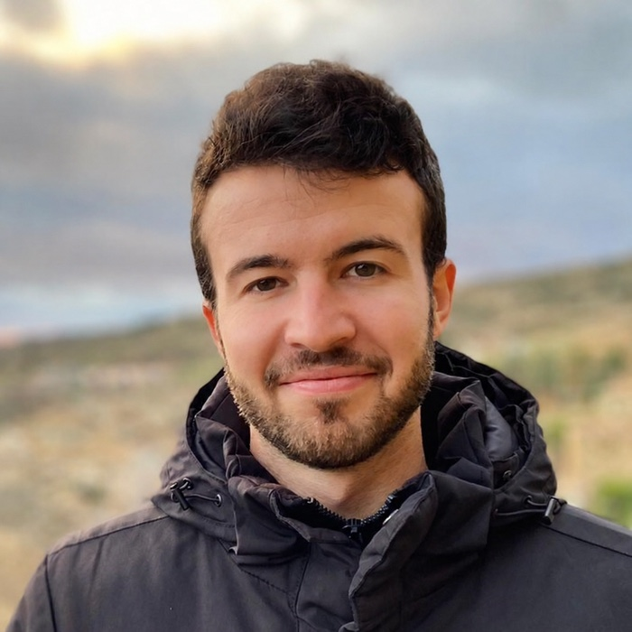
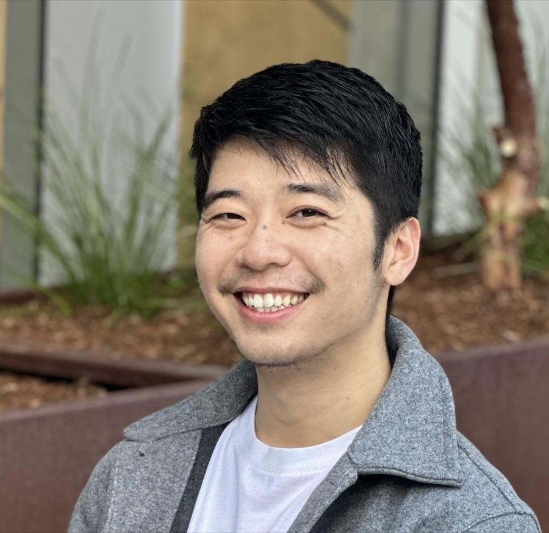

DCA-MI (2nd Ed.) | Data Curation & Augmentation in Medical Imaging | ECCV 20262024 archive
European Conference on Computer Vision | ECCV 2026 | 2nd EditionVol. 02 / No. 01 / 2026
Data Curation & Augmentation
in Medical Imaging.
An ECCV workshop on the data bottleneck for robust medical imaging AI - from curated image and video datasets to multimodal clinical benchmarks spanning diagnosis, intervention, and surgical care.
September 8-9, 2026 | ECCV venue TBAWorkshop datesSuccessor to CVPR 2024

FIG. 01iMED RGB / Depth / Geometry

FIG. 02CLIMB benchmark overview

FIG. 03SurgVU surgical tasks
IIEditionAfter CVPR 2024
3DatasetsiMED | CLIMB | SurgVU
4Invited speakersConfirmed program
8-9SeptAt ECCV 2026
§ 01About the workshop
PP. 01 - 04
From scarce data to safer medicine.
A focused program of invited talks, peer-reviewed papers, and dataset spotlights.
Reliable medical systems depend on data quality as much as model novelty. Clinical image, video, and multimodal patient data are scarce, expensive to annotate, heterogeneous, and ethically restricted. DCA-MI advances data-centric methods and benchmarks as first-class research contributions across diagnostic imaging, interventional video, multimodal clinical data, surgical scene understanding, and clinical translation.
"The bottleneck is rarely the model. It is almost always the data."
Organizing Committee
§ 02Featured speakers
Invited speakers
Invited speakers for DCA-MI 2026.
Sophia Bano
UCL, United Kingdom
Robot vision and scene understanding for minimally invasive surgery.
Lena Maier-Hein
DKFZ / Heidelberg University, Germany
Surgical data science, benchmarking, and reproducible evaluation.
José M. M. Montiel
Universidad de Zaragoza, Spain
Visual SLAM, deformable SLAM for endoscopy, EndoMapper.

Mengya Xu
CUHK, Hong Kong
Medical AI across MICCAI, IPCAI, and ICRA.
§ 03Organizers
Organizing committee
Organized by the DCA-MI team.

Fengyi Jiang
Primary contact | Intuitive Surgical
Sierra Bonilla
iMED dataset lead | UCL Hawkes Institute

Javier Morlana
CLiMB benchmark lead | Universidad de Zaragoza
Ray Zhang
Organizer | Intuitive Surgical
Mary Jin
Organizer | Intuitive Surgical

Shuoqi Chen
Computer Vision & Medical Imaging engineer | Intuitive Surgical
Jingpei Lu
Research Scientist | Intuitive Surgical
Rogerio Nespolo
SurgVU lead | Intuitive Surgical
§ 04Areas of focus
Aligned with invited talks
What we want to talk about.
01
Dataset Acquisition, Annotation, and Curation in Medical Imaging
Expand
Acquisition pipelines and protocols under real clinical constraints
Annotation strategy, labelling instructions, annotator consensus and disagreement
Pseudo-ground-truth generation, calibration, and quality control
Multi-site, multi-modal, and longitudinal dataset construction
Curation transparency: documenting acquisition, exclusions, and demographic coverage
Annotation tooling, including interactive and promptable segmentation
02
Benchmarking, Evaluation, and Reproducibility
Expand
Clinically meaningful metric design for classification, detection, segmentation, and tracking
Splits, leakage analysis, and dataset contamination
Dataset cleaning, label-error detection, and de-duplication protocols
Calibration of metric choice to clinical decision-making
Reporting and reproducibility standards for medical CV
Human-in-the-loop and clinician-grounded evaluation methodologies
03
Privacy, Fairness, and Federated Learning in Medical CV
Expand
Anonymization and privacy-preserving dataset release
Federated learning under partial or heterogeneous labels; federated benchmarks
Bias auditing of training data and trained models
Fairness across demographic, anatomical, and rare-subgroup strata
Protected-attribute leakage and demographic-shortcut detection
Privacy-utility trade-offs in synthetic-data release
04
Generative Modeling for Dataset Augmentation
Expand
Diffusion models, world models, and controllable generative pipelines for images and video
Foundation-model-driven and text-conditioned synthesis
Synthetic data for under-represented populations, rare diseases, and minority subgroups
Label and structure augmentation: lesion, polyp, vessel, and surgical scene synthesis
Modality-specific augmentation, including fan-shape preservation for ultrasound
UCL researcher focused on robot vision and scene understanding for minimally invasive surgery.
Invited speaker
Lena Maier-Hein
DKFZ and Heidelberg University researcher in surgical data science, benchmarking, and reproducible evaluation.
Invited speaker
José M. M. Montiel
Universidad de Zaragoza researcher known for visual SLAM, deformable SLAM for endoscopy, and EndoMapper.
Invited speaker
Mengya Xu
Chinese University of Hong Kong researcher working on medical AI across clinical and surgical applications.
§ 06Featured datasets
Curation case studies
Three benchmarks, three data lessons.
Each spotlight treats a dataset as a research contribution: acquisition decisions, ground-truth design, split strategy, and evaluation pitfalls.
PRIMARY SPOTLIGHT
iMED
A Multi-Endoscope Dataset for Surgical 3D Perception
340 sequences~170K frame pairs60 FPS19 methods10 ex vivo organs18 cadaveric scenes10 live porcine procedures4 camera streams
iMED focuses the workshop on synchronized, dual-view, deformable, specular surgical scenes. The dataset is designed to stress test visual geometry, photogrammetry, and endoscopic reconstruction beyond rigid-world assumptions.
Figure sources: iMED local paper assets; CLIMB Figure 2 from arXiv:2503.07667; SurgVU Figure 1 from arXiv:2501.09209.
§ 07Calendar
All times AOE
Important dates.
15 May 2026Call for papers postedOpen
01 Jul 2026Paper submission deadlineHard
01 Aug 2026Notification of acceptanceEmail
15 Aug 2026Camera-ready dueFinal
08-09 Sep 2026Workshop at ECCV 2026In person
§ 02Featured DatasetiMED | CLIMB | SurgVU
Dataset spotlights.
Three benchmarks, three data lessons.
Each spotlight treats a dataset as a research contribution: acquisition decisions, ground-truth design, split strategy, and evaluation pitfalls.
PRIMARY SPOTLIGHT
iMED
A Multi-Endoscope Dataset for Surgical 3D Perception
340 sequences~170K frame pairs60 FPS19 methods10 ex vivo organs18 cadaveric scenes10 live porcine procedures4 camera streams
iMED focuses the workshop on synchronized, dual-view, deformable, specular surgical scenes. The dataset is designed to stress test visual geometry, photogrammetry, and endoscopic reconstruction beyond rigid-world assumptions.
Figure sources: iMED local paper assets; CLIMB Figure 2 from arXiv:2503.07667; SurgVU Figure 1 from arXiv:2501.09209.
§ 02Important DatesAll times AOE
Calendar at a glance.
Live countdownCalculating...
15 May 2026
Call for papers posted
OpenReview information, templates, and final submission instructions become available.
01 Jul 2026
Paper deadline
Full papers, extended abstracts, and dataset submissions due by 23:59 AOE.
01 Aug 2026
Acceptance notifications
Decisions sent by email with presentation type.
15 Aug 2026
Camera-ready due
Final PDFs uploaded and program frozen.
08-09 Sep 2026
Workshop at ECCV
DCA-MI 2026 meets during ECCV on September 8-9.
§ 03Call for PapersOpen Spring 2026
Submit your research.
01 - Scope
The data itself is the subject.
We invite contributions across curation, augmentation, restoration, 3D perception, learning with limited or imperfect data, and clinical translation. Submissions may be empirical, methodological, position-style, or new datasets and benchmarks with reproducible baselines.
02 - Topics
Cross-theme work is welcome.
We are especially interested in work that shows how upstream data decisions propagate into downstream clinical performance across imaging domains.
03 - Format
Three submission tracks.
Full papers, extended abstracts, and dataset / benchmark submissions are welcome. Final page limits and template links will be posted with the OpenReview call.
04 - Review
Double-blind review.
Each submission receives technical and domain review, with dataset papers evaluated for provenance, license clarity, and reproducibility.
05 - Ethics
Provenance is a first-class concern.
All datasets must document source, consent basis, licensing, and known coverage limits. Submissions with unclear protected-data handling may be desk-rejected.
§ 05ProgramSchedule draft
Workshop schedule.
05ASchedule
Time | Session | Format
TimeEventType
09:00-09:1515 min
Opening remarks
Welcome and workshop overview from the organizers.
Opening09:15-09:4530 min
Keynote 1: Dataset scarcity, design and curation in medical imaging
Invited talk on data bottlenecks for robust medical imaging AI.
Keynote09:45-10:3045 min
Coffee Break & Poster Session I
Interactive poster session and attendee discussion.
Poster10:30-11:3060 min
Oral Session 1: 3D Understanding and Spatial Data
Four accepted papers, 15 minutes each.
Oral11:30-13:0090 min
Break
Lunch break.
Break13:00-13:3030 min
Keynote 2: SLAM, Neural Rendering
Invited talk on endoscopic geometry, mapping, and scene representation.
Keynote13:30-14:3060 min
Data Curation for Challenge Session
iMED: Multi-Endoscope Dataset | 20 min CLiMB: Benchmark for Colonoscopy SLAM | 20 min SurgVU: Surgical Visual Understanding | 20 min
Dataset14:30-15:0030 min
Coffee Break & Poster Session II
Second poster block and hallway discussion.
Poster15:00-15:3030 min
Keynote 3: Autonomous Surgery and Clinical Translation
Invited talk on translating surgical data into robust clinical systems.
Keynote15:30-16:3060 min
Oral Session 2: Visual degradation and restoration
Four accepted papers, 15 minutes each.
Oral16:30-17:0030 min
Closing Remarks
Closing notes and next steps from the organizers.
Closing
05BSpeakers
Invited speakers
Sophia Bano
UCL, United Kingdom
Robot vision and scene understanding for minimally invasive surgery.
Lena Maier-Hein
DKFZ / Heidelberg University, Germany
Dataset scarcity, design, curation, and reproducible surgical data science.
José M. M. Montiel
Universidad de Zaragoza, Spain
SLAM, neural rendering, deformable reconstruction, and EndoMapper.
Mengya Xu
CUHK, Hong Kong
Autonomous surgery, clinical translation, and medical computer vision.
§ 06Organizers8 organizers
The team behind it.
Fengyi Jiang
Primary contact | Intuitive Surgical
Sierra Bonilla
iMED dataset lead | UCL Hawkes Institute
Javier Morlana
CLiMB benchmark lead | Universidad de Zaragoza
Ray Zhang
Organizer | Intuitive Surgical
Mary Jin
Organizer | Intuitive Surgical
Shuoqi Chen
Computer Vision & Medical Imaging engineer at Intuitive Surgical, specializing in advanced imaging and robotic-assisted procedures. CMU Robotics Institute alumnus; presenter and reviewer across IEEE TRO, IROS, CVPR, and ICML. shuoqi.chen@intusurg.com
Jingpei Lu
Research Scientist | Intuitive Surgical
Rogerio Nespolo
SurgVU lead | Intuitive Surgical
07AAdvisory Board
Confirmed advisors and invited speakers
Featured advisor
Stefanie Speidel
Professor for Translational Surgical Oncology at NCT Dresden, working on surgical data science, computer-assisted surgery, robotic vision, and AI-enabled clinical translation.
Chinese University of Hong Kong researcher working on medical AI across clinical and surgical applications, with recent work across MICCAI, IPCAI, and ICRA.